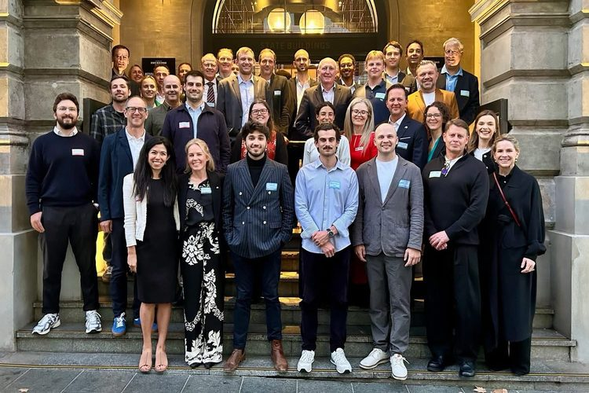
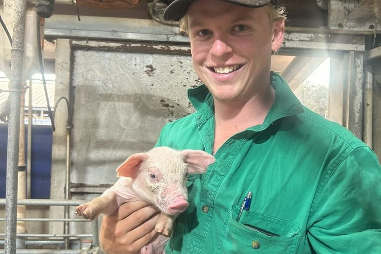
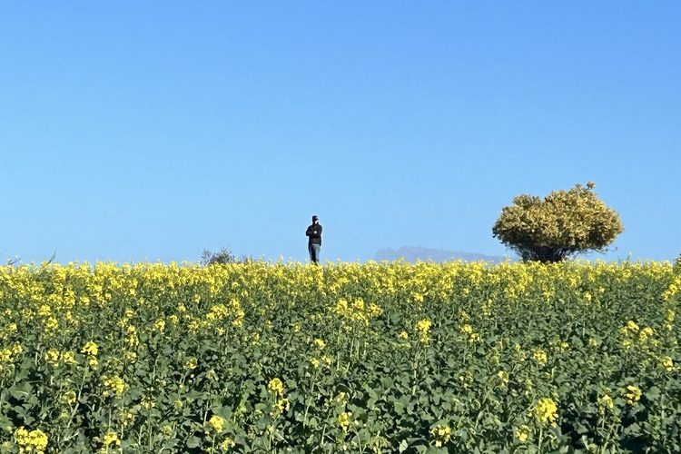
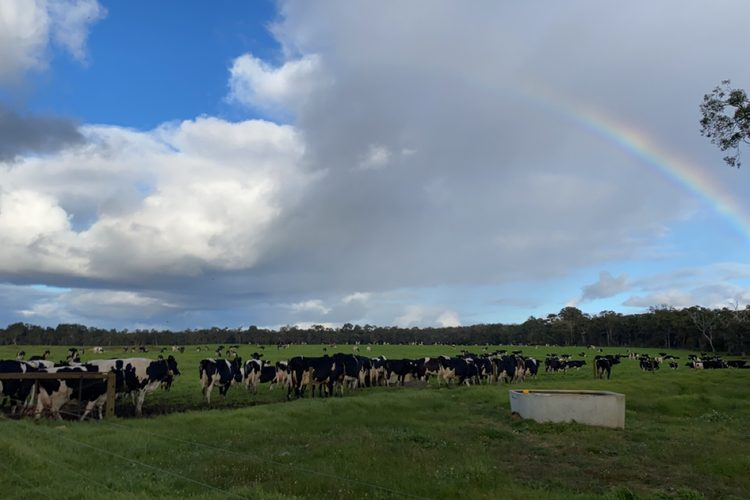

Hugh Plowman
Overly ambitious, probably underqualified, start-up experience, mad keen to get involved and make a go of it.
Looking to join a like-minded startup that values the customer, the team and learning.
Agribusiness, Mining, Deeptech, Health, AI – it doesn’t matter.
Australia, but open to wherever the opportunity lies.
A bit about me
I’m a city kid who started out as the s**t kicker (literally covered in the stuff). My first year out of school was spent getting up at 4am to milk 1,000 cows, and over the next three years I worked on farms and in agricultural businesses to pay my way through college.
Through college, work and internships, I’ve seen more than 50 farms, agribusinesses and agri-finance companies up close across Australia, the USA and New Zealand. They taught me commercial lessons that apply to any industry.
In 2026 I’ve had a crash course in startups: developing commercial strategy and business analytics, pitching institutional investors and high net worth individuals, co-leading a capital raise through direct, personal outreach, writing grant applications, and helping to build a carbon scope three programme.
The same year, I was lucky enough to be part of the Founders Factory Nature Tech Accelerator. I never imagined I’d be sitting in a Perth pub trading ideas with a NASA physicist and MIT, Stanford and Harvard graduates.
I’m passionate about technology, agriculture and the people trying to improve our industries and our economy.
My thoughts on Australia as an economy:
- We’re incredibly good at producing raw products (grain and minerals).
- We’re incredibly bad at value-adding those raw products (we export pretty much all of it).
- We’re completely reliant on international markets for both inputs and outputs.
- And we’re not doing enough to change it.
I want to be part of that change, by helping build the companies and technologies that will take us from being one of the least complex economies in the world to one of the most.
Experience
What’s next
Looking for what’s next, ideally with a startup or VC working to make real change and leave a lasting impact on the world.
Founders Factory and DuraTerra
A chance meeting led to a full-time role with DuraTerra, an early-stage WA agtech startup, where I opened doors to investors and industry partners, built investor materials and financial models, and developed go-to-market strategy. Through DuraTerra I joined Cohort 4 of the Founders Factory Nature Tech Accelerator, including the residency week and pitching sessions.

Marcus Oldham College
I moved to Geelong to study at Marcus Oldham College, Australia’s specialist agribusiness school (70% business and commerce, 30% agriculture). I completed 12 weeks of internships with Argyle Capital, Growth Farms and Impact Ag, and graduated with a distinction average in December 2025.
Three years on the land
Three years working across some of WA’s best farming operations. I started on a 1,000-cow dairy and in a silage contracting business that took me to 25+ farms across the southwest, then moved into broadacre cropping and sheep, running machinery through seeding and harvest and handling livestock.


Deciding to go farming
I’d grown up in the city with no connection to farming, but I wanted to scratch an itch, and found myself milking cows in the southwest of WA.

Finished school
Graduated Year 12 in Perth. A sports injury left me sidelined, and much to my mum’s disappointment, I had no plan to start formal study.
Contact
I’m always keen to connect with founders, investors and anyone building something ambitious, whatever the industry. Feel free to get in touch.